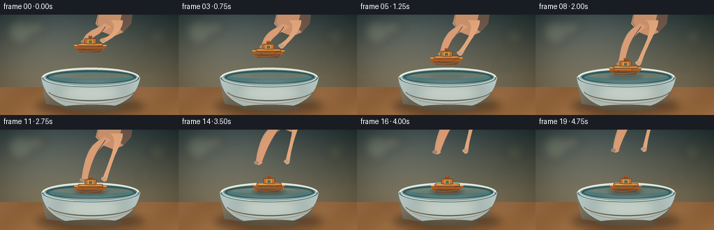
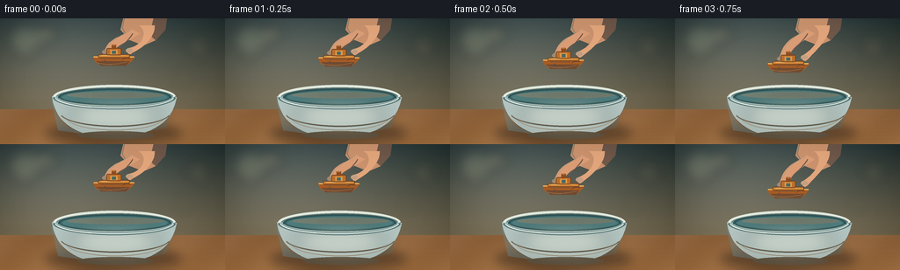

CODING AGENTS AS PIXEL WORLD MODELS
traex/GPT-5.6-Sol · mechanics_0010
点击播放 · 原生 RGB 像素
逐轮保存的候选
回放视频、检查图与代码变化。
每份候选均可单独播放。实际图片检查记录在下方工具轨迹中。
候选 01播放与检查图
点击播放 · 原生 RGB 像素


展开代码变化
--- 上一保存版本
+++ 本次保存版本
@@ -0,0 +1,253 @@
+from pathlib import Path
+import math
+import numpy as np
+from PIL import Image, ImageDraw, ImageFilter
+import artifact_io
+
+W, H, N = 256, 144, 20
+S = 4
+rng = np.random.default_rng(4817)
+
+
+def q(v):
+ return int(round(v * S))
+
+def box(b):
+ return tuple(q(v) for v in b)
+
+def pts(p):
+ return [(q(x), q(y)) for x, y in p]
+
+def bezier(p0, p1, p2, p3, steps=24):
+ out=[]
+ for t in np.linspace(0,1,steps):
+ a=(1-t)**3; b=3*(1-t)**2*t; c=3*(1-t)*t*t; d=t**3
+ out.append((a*p0[0]+b*p1[0]+c*p2[0]+d*p3[0], a*p0[1]+b*p1[1]+c*p2[1]+d*p3[1]))
+ return out
+
+def smooth(x):
+ x=max(0.0,min(1.0,x)); return x*x*(3-2*x)
+
+def layer():
+ return Image.new('RGBA',(W*S,H*S),(0,0,0,0))
+
+def composite(base, over):
+ return Image.alpha_composite(base, over)
+
+def ellipse_gradient(size, center, radii, inner, outer):
+ h,w=size
+ yy,xx=np.mgrid[0:h,0:w]
+ d=np.sqrt(((xx-center[0])/radii[0])**2+((yy-center[1])/radii[1])**2)
+ t=np.clip(d,0,1)[...,None]
+ a=np.array(inner,float); b=np.array(outer,float)
+ return (a*(1-t)+b*t).clip(0,255).astype(np.uint8)
+
+# Static softly lit kitchen/table background at rendering resolution.
+yy,xx=np.mgrid[0:H*S,0:W*S]
+y=yy/S; x=xx/S
+wall_top=np.array([51,66,66.]); wall_bottom=np.array([123,112,88.])
+t=np.clip(y/105,0,1)[...,None]
+base=wall_top*(1-t)+wall_bottom*t
+# warm light from left and dark vignette
+light=23*np.exp(-((x-54)**2/(2*66**2)+(y-34)**2/(2*53**2)))
+vig=18*((x-W/2)/(W/2))**2 + 8*((y-65)/90)**2
+base=base+light[...,None]-vig[...,None]
+# tabletop begins behind bowl
+mask=y>=104
+wood=np.zeros_like(base)
+wood[:] = np.array([145,101,62.])
+wood += ((y-104)/40)[...,None]*np.array([14,9,2.])
+wood += 5*np.sin(x/17 + y/13)[...,None]
+base=np.where(mask[...,None],wood,base)
+noise=rng.normal(0,1.25,(H*S,W*S,1))
+base=np.clip(base+noise,0,255).astype(np.uint8)
+static=Image.fromarray(np.dstack([base,np.full((H*S,W*S),255,np.uint8)]),'RGBA')
+
+# Background bokeh and panel lines, deliberately soft.
+bg=layer(); d=ImageDraw.Draw(bg)
+d.line(pts([(0,103.5),(256,103.5)]), fill=(92,69,51,115), width=q(.8))
+d.line(pts([(0,105),(256,105)]), fill=(211,164,105,55), width=q(.6))
+# blurred window-like glow left
+for bx,by,br,col in [(28,25,19,(218,220,174,42)),(54,18,10,(249,221,157,47)),(226,31,13,(178,154,105,30)),(209,67,8,(231,197,137,30))]:
+ d.ellipse(box((bx-br,by-br,bx+br,by+br)),fill=col)
+bg=bg.filter(ImageFilter.GaussianBlur(q(7)))
+static=composite(static,bg)
+# subtle table grain
+tex=layer(); td=ImageDraw.Draw(tex)
+for j in range(18):
+ gy=108+j*2.1+rng.uniform(-.5,.5)
+ td.line(pts([(0,gy),(256,gy+rng.uniform(-1,1))]), fill=(77,47,28,int(rng.integers(7,18))), width=q(.35))
+static=composite(static,tex)
+
+
+def draw_bowl_under(base_img):
+ # grounded cast shadow
+ sh=layer(); sd=ImageDraw.Draw(sh)
+ sd.ellipse(box((51,119,207,143)), fill=(28,20,16,125))
+ sd.ellipse(box((74,123,188,138)), fill=(20,15,13,105))
+ sh=sh.filter(ImageFilter.GaussianBlur(q(6)))
+ out=composite(base_img,sh)
+ b=layer(); d=ImageDraw.Draw(b)
+ # bowl body silhouette, with a curved lower foot
+ bodypoly = bezier((59,89),(62,112),(76,132),(119,136),18) + bezier((119,136),(160,138),(196,125),(201,90),18)
+ d.polygon(pts(bodypoly), fill=(180,197,193,255))
+ # body gradient bands using nested curved ellipses and translucent washes
+ d.ellipse(box((62,77,199,104)), fill=(151,178,178,255))
+ d.ellipse(box((66,80,195,100)), fill=(42,83,87,255))
+ d.ellipse(box((69,82,192,98)), fill=(67,111,112,255))
+ # cool reflected sky across water
+ d.ellipse(box((71,83,190,97)), fill=(80,125,126,255))
+ d.ellipse(box((76,84,187,91.5)), fill=(112,149,145,110))
+ # back ceramic rim highlight
+ d.arc(box((60,76,200,104)), 184, 356, fill=(226,235,224,255), width=q(3.2))
+ d.arc(box((64,79,197,101)), 185, 355, fill=(88,117,115,180), width=q(1.2))
+ # soft shaded body, side and bottom
+ d.polygon(pts(bezier((59,91),(63,118),(80,133),(121,136),20)+[(66,128),(59,98)]), fill=(103,135,139,115))
+ d.polygon(pts(bezier((201,91),(196,117),(177,132),(139,136),20)+[(189,125),(201,94)]), fill=(80,115,120,80))
+ d.ellipse(box((88,129,175,138)), fill=(75,97,96,85))
+ # luminous front face
+ hi=layer(); hd=ImageDraw.Draw(hi)
+ hd.ellipse(box((78,91,183,134)),fill=(239,238,216,72))
+ hi=hi.filter(ImageFilter.GaussianBlur(q(10)))
+ b=composite(b,hi)
+ # a hand-painted blue stripe emphasizes curvature
+ d=ImageDraw.Draw(b)
+ d.arc(box((68,92,194,124)), 12, 168, fill=(66,112,124,90), width=q(1.4))
+ d.arc(box((75,98,187,128)), 14, 166, fill=(228,234,215,95), width=q(.75))
+ return composite(out,b)
+
+
+def add_water_effects(base_img, frame, boatx, boaty):
+ out=base_img
+ contact=max(0.0,(frame-9)/10.0)
+ if contact<=0: return out
+ effects=layer(); e=ImageDraw.Draw(effects)
+ # warm, vertically compressed reflection beneath the floating toy
+ alpha=int(63*min(1,contact*3))
+ e.ellipse(box((boatx-18,87,boatx+18,94)), fill=(154,90,38,alpha))
+ effects=effects.filter(ImageFilter.GaussianBlur(q(2.2)))
+ # confine reflection and ripples to water ellipse
+ mask=Image.new('L',(W*S,H*S),0); md=ImageDraw.Draw(mask)
+ md.ellipse(box((68,80,193,99)),fill=255)
+ effects.putalpha(Image.composite(effects.getchannel('A'),Image.new('L',effects.size,0),mask))
+ out=composite(out,effects)
+ rip=layer(); rd=ImageDraw.Draw(rip)
+ age=frame-9
+ for k in range(3):
+ a=age-k*1.7
+ if a>0:
+ rw=12+a*5.1; rh=1.5+a*.62
+ fade=int(max(0,115-a*10-k*16))
+ rd.arc(box((boatx-rw,88-rh,boatx+rw,88+rh)), 185,355,fill=(218,235,218,fade),width=q(.65))
+ rd.arc(box((boatx-rw,88-rh,boatx+rw,88+rh)), 5,175,fill=(34,76,82,fade//2),width=q(.55))
+ return composite(out,rip)
+
+
+def draw_hand(base_img, frame, boaty):
+ # The fingers follow the toy down, then open and withdraw after release.
+ if frame<=10:
+ lift=0.0; spread=0.0; fingertip=boaty-9
+ else:
+ r=smooth((frame-10)/7)
+ lift=45*r; spread=8*smooth((frame-10)/3); fingertip=73-lift
+ # Entire hand fades only once it has moved well above the crop.
+ hand=layer(); d=ImageDraw.Draw(hand)
+ # palm/back of hand reaching in from top-right
+ palm=[(143+spread*.2,-12-lift),(190,-9-lift),(188,13-lift),(177,25-lift),
+ (163,31-lift),(148,25-lift),(137,13-lift)]
+ d.polygon(pts(palm),fill=(201,145,108,255))
+ # wrist warm edge and palm modelling
+ d.polygon(pts([(177,-10-lift),(191,-8-lift),(188,13-lift),(177,25-lift),(170,19-lift)]),fill=(164,105,79,125))
+ d.line(pts([(143,-8-lift),(139,11-lift),(146,24-lift)]),fill=(239,185,142,120),width=q(1.2))
+ # left/thumb-like pinching finger, curved to left side of cabin
+ left = bezier((149,12-lift),(139,22-lift),(126-spread,20-lift),(119-spread,fingertip-1),16)
+ left += bezier((119-spread,fingertip-1),(117-spread,fingertip+5),(124-spread,fingertip+7),(128-spread,fingertip+2),10)
+ left += bezier((128-spread,fingertip+2),(133,29-lift),(150,25-lift),(159,17-lift),15)
+ d.polygon(pts(left),fill=(218,156,116,255))
+ # index finger on right, descending naturally
+ right = bezier((158,8-lift),(169,15-lift),(163,31-lift),(146+spread,fingertip-3),18)
+ right += bezier((146+spread,fingertip-3),(143+spread,fingertip+3),(147+spread,fingertip+6),(151+spread,fingertip+2),10)
+ right += bezier((151+spread,fingertip+2),(164,33-lift),(176,21-lift),(176,8-lift),16)
+ d.polygon(pts(right),fill=(226,165,123,255))
+ # finger shadows and nail glints
+ d.line(pts(bezier((128-spread,fingertip+1),(134,34-lift),(146,27-lift),(151,17-lift),14)),fill=(140,84,67,100),width=q(1.0))
+ d.ellipse(box((143+spread,fingertip-2.8,151+spread,fingertip+2.2)),fill=(242,187,150,180))
+ d.arc(box((143+spread,fingertip-3,151+spread,fingertip+3)),190,345,fill=(255,214,177,160),width=q(.55))
+ d.ellipse(box((116-spread,fingertip-1,123-spread,fingertip+4)),fill=(233,176,139,125))
+ # gentle edge highlight from the left
+ d.line(pts(bezier((149,12-lift),(139,22-lift),(127-spread,21-lift),(120-spread,fingertip),18)),fill=(255,203,157,150),width=q(.8))
+ # slight softness keeps hand photographic while retaining silhouette
+ return composite(base_img,hand)
+
+
+def draw_boat(base_img, frame, cx, cy):
+ # proximity shadow appears before contact and becomes a stable contact shadow.
+ proximity=np.clip((cy-57)/25,0,1)
+ sh=layer(); sd=ImageDraw.Draw(sh)
+ sd.ellipse(box((cx-25,87-proximity,cx+25,91+proximity)),fill=(20,42,43,int(20+75*proximity)))
+ sh=sh.filter(ImageFilter.GaussianBlur(q(2.5)))
+ out=composite(base_img,sh)
+ toy=layer(); d=ImageDraw.Draw(toy)
+ # curved solid-wood hull
+ hull=[(cx-24,cy-2),(cx+24,cy-2),(cx+20,cy+3),(cx+14,cy+8),(cx-15,cy+8),(cx-21,cy+4)]
+ d.polygon(pts(hull),fill=(166,91,35,255))
+ d.line(pts([(cx-23,cy-2),(cx+23,cy-2)]),fill=(247,183,91,255),width=q(1.2))
+ # lower hull shading and rounded ends
+ d.polygon(pts([(cx-20,cy+3),(cx+18,cy+3),(cx+14,cy+8),(cx-15,cy+8)]),fill=(120,60,28,165))
+ d.line(pts(bezier((cx-18,cy+5),(cx-7,cy+8),(cx+5,cy+6),(cx+15,cy+4),18)),fill=(217,127,49,130),width=q(.7))
+ # deck
+ d.rounded_rectangle(box((cx-18,cy-5,cx+18,cy-1)),radius=q(1.5),fill=(208,132,55,255),outline=(104,58,29,255),width=q(.7))
+ d.line(pts([(cx-15,cy-4),(cx+14,cy-4)]),fill=(247,182,88,210),width=q(.6))
+ # recognizable little raised cabin and peg
+ d.rounded_rectangle(box((cx-8.5,cy-12,cx+8.5,cy-4)),radius=q(1.8),fill=(188,111,42,255),outline=(105,57,28,255),width=q(.7))
+ d.rectangle(box((cx-4,cy-10,cx+4,cy-5)),fill=(226,153,70,255))
+ d.rectangle(box((cx-2.2,cy-9,cx+2.2,cy-5.5)),fill=(72,105,100,255))
+ d.rounded_rectangle(box((cx-2.6,cy-16,cx+2.6,cy-11)),radius=q(.8),fill=(139,75,31,255))
+ d.line(pts([(cx-1.6,cy-15.4),(cx+1.5,cy-15.4)]),fill=(235,164,75,180),width=q(.5))
+ # wood grain and a tiny carved bow line
+ d.arc(box((cx+9,cy-1,cx+21,cy+6)),200,310,fill=(91,48,28,170),width=q(.65))
+ d.line(pts([(cx-15,cy),(cx+8,cy)]),fill=(102,53,27,80),width=q(.45))
+ d.ellipse(box((cx-11,cy+2,cx-9.5,cy+3.3)),fill=(80,43,24,120))
+ # pinpoint lacquer highlight
+ d.line(pts([(cx-14,cy-3.5),(cx-4,cy-3.5)]),fill=(255,205,117,200),width=q(.55))
+ return composite(out,toy)
+
+
+def draw_front_rim(base_img):
+ rim=layer(); d=ImageDraw.Draw(rim)
+ # front lip overlays the boat at the water boundary, giving depth.
+ d.arc(box((60,76,200,104)), 3,177, fill=(76,109,112,255), width=q(3.0))
+ d.arc(box((62,77,198,103)), 4,176, fill=(207,220,211,255), width=q(1.5))
+ d.arc(box((67,81,194,100)), 5,175, fill=(240,239,217,150), width=q(.7))
+ # strongest specular glint on near-left rim
+ d.arc(box((62,77,198,103)), 112,164, fill=(255,255,239,220), width=q(1.1))
+ return composite(base_img,rim)
+
+frames=[]
+for i in range(N):
+ if i<=10:
+ e=smooth(i/10)
+ cy=46+36*e
+ cx=129.5-1.2*math.sin(math.pi*e)
+ else:
+ age=i-10
+ cy=82 + 1.25*math.sin(age*1.18)*math.exp(-age*.22)
+ cx=129.5 + .45*math.sin(age*.65)*math.exp(-age*.12)
+ im=static.copy()
+ im=draw_bowl_under(im)
+ im=add_water_effects(im,i,cx,cy)
+ # Hand is behind the held object; boat remains visually crisp in foreground.
+ im=draw_hand(im,i,cy)
+ im=draw_boat(im,i,cx,cy)
+ im=draw_front_rim(im)
+ # very subtle cinematic edge vignette
+ va=layer(); arr=np.zeros((H*S,W*S,4),dtype=np.uint8)
+ dist=((x-W/2)/(W/2))**2 + ((y-H/2)/(H/2))**2
+ arr[...,3]=np.clip((dist-.45)*13,0,16).astype(np.uint8)
+ va=Image.fromarray(arr,'RGBA'); im=composite(im,va)
+ im=im.convert('RGB').resize((W,H),Image.Resampling.LANCZOS)
+ frames.append(np.asarray(im,dtype=np.uint8))
+
+frames=np.stack(frames)
+artifact_io.save(frames, Path(__file__).resolve().parent)
+print('saved',frames.shape,frames.dtype,'range',frames.min(),frames.max())
可观测工具轨迹
实际执行的命令与返回图片。
命令 1exit 0
/bin/bash -lc "cat prompt.txt && printf '\\n---RULES---\\n' && cat GENERATION_RULES.md && printf '\\n---SPEC---\\n' && cat task_spec.json"
命令 2exit 0
/bin/bash -lc "find . -maxdepth 2 -type f -printf '%p\\n' | sort && printf '\\nTOOLS\\n' && command -v ffmpeg || true && command -v blender || true && command -v python3 || true"
命令 3exit 0
/bin/bash -lc 'cat artifact_io.py'
命令 4exit 0
/bin/bash -lc "cat > generate.py <<'PY'
from pathlib import Path
import math
import numpy as np
from PIL import Image, ImageDraw, ImageFilter
import artifact_io
W, H, N = 256, 144, 20
S = 4
rng = np.random.default_rng(4817)
def q(v):
return int(round(v * S))
def box(b):
return tuple(q(v) for v in b)
def pts(p):
return [(q(x), q(y)) for x, y in p]
def bezier(p0, p1, p2, p3, steps=24):
out=[]
for t in np.linspace(0,1,steps):
a=(1-t)**3; b=3*(1-t)**2*t; c=3*(1-t)*t*t; d=t**3
out.append((a*p0[0]+b*p1[0]+c*p2[0]+d*p3[0], a*p0[1]+b*p1[1]+c*p2[1]+d*p3[1]))
return out
def smooth(x):
x=max(0.0,min(1.0,x)); return x*x*(3-2*x)
def layer():
return Image.new('RGBA',(W*S,H*S),(0,0,0,0))
def composite(base, over):
return Image.alpha_composite(base, over)
def ellipse_gradient(size, center, radii, inner, outer):
h,w=size
yy,xx=np.mgrid[0:h,0:w]
d=np.sqrt(((xx-center[0])/radii[0])**2+((yy-center[1])/radii[1])**2)
t=np.clip(d,0,1)[...,None]
a=np.array(inner,float); b=np.array(outer,float)
return (a*(1-t)+b*t).clip(0,255).astype(np.uint8)
# Static softly lit kitchen/table background at rendering resolution.
yy,xx=np.mgrid[0:H*S,0:W*S]
y=yy/S; x=xx/S
wall_top=np.array([51,66,66.]); wall_bottom=np.array([123,112,88.])
t=np.clip(y/105,0,1)[...,None]
base=wall_top*(1-t)+wall_bottom*t
# warm light from left and dark vignette
light=23*np.exp(-((x-54)**2/(2*66**2)+(y-34)**2/(2*53**2)))
vig=18*((x-W/2)/(W/2))**2 + 8*((y-65)/90)**2
base=base+light[...,None]-vig[...,None]
# tabletop begins behind bowl
mask=y>=104
wood=np.zeros_like(base)
wood[:] = np.array([145,101,62.])
wood += ((y-104)/40)[...,None]*np.array([14,9,2.])
wood += 5*np.sin(x/17 + y/13)[...,None]
base=np.where(mask[...,None],wood,base)
noise=rng.normal(0,1.25,(H*S,W*S,1))
base=np.clip(base+noise,0,255).astype(np.uint8)
static=Image.fromarray(np.dstack([base,np.full((H*S,W*S),255,np.uint8)]),'RGBA')
# Background bokeh and panel lines, deliberately soft.
bg=layer(); d=ImageDraw.Draw(bg)
d.line(pts([(0,103.5),(256,103.5)]), fill=(92,69,51,115), width=q(.8))
d.line(pts([(0,105),(256,105)]), fill=(211,164,105,55), width=q(.6))
# blurred window-like glow left
for bx,by,br,col in [(28,25,19,(218,220,174,42)),(54,18,10,(249,221,157,47)),(226,31,13,(178,154,105,30)),(209,67,8,(231,197,137,30))]:
d.ellipse(box((bx-br,by-br,bx+br,by+br)),fill=col)
bg=bg.filter(ImageFilter.GaussianBlur(q(7)))
static=composite(static,bg)
# subtle table grain
tex=layer(); td=ImageDraw.Draw(tex)
for j in range(18):
gy=108+j*2.1+rng.uniform(-.5,.5)
td.line(pts([(0,gy),(256,gy+rng.uniform(-1,1))]), fill=(77,47,28,int(rng.integers(7,18))), width=q(.35))
static=composite(static,tex)
def draw_bowl_under(base_img):
# grounded cast shadow
sh=layer(); sd=ImageDraw.Draw(sh)
sd.ellipse(box((51,119,207,143)), fill=(28,20,16,125))
sd.ellipse(box((74,123,188,138)), fill=(20,15,13,105))
sh=sh.filter(ImageFilter.GaussianBlur(q(6)))
out=composite(base_img,sh)
b=layer(); d=ImageDraw.Draw(b)
# bowl body silhouette, with a curved lower foot
bodypoly = bezier((59,89),(62,112),(76,132),(119,136),18) + bezier((119,136),(160,138),(196,125),(201,90),18)
d.polygon(pts(bodypoly), fill=(180,197,193,255))
# body gradient bands using nested curved ellipses and translucent washes
d.ellipse(box((62,77,199,104)), fill=(151,178,178,255))
d.ellipse(box((66,80,195,100)), fill=(42,83,87,255))
d.ellipse(box((69,82,192,98)), fill=(67,111,112,255))
# cool reflected sky across water
d.ellipse(box((71,83,190,97)), fill=(80,125,126,255))
d.ellipse(box((76,84,187,91.5)), fill=(112,149,145,110))
# back ceramic rim highlight
d.arc(box((60,76,200,104)), 184, 356, fill=(226,235,224,255), width=q(3.2))
d.arc(box((64,79,197,101)), 185, 355, fill=(88,117,115,180), width=q(1.2))
# soft shaded body, side and bottom
d.polygon(pts(bezier((59,91),(63,118),(80,133),(121,136),20)+[(66,128),(59,98)]), fill=(103,135,139,115))
d.polygon(pts(bezier((201,91),(196,117),(177,132),(139,136),20)+[(189,125),(201,94)]), fill=(80,115,120,80))
d.ellipse(box((88,129,175,138)), fill=(75,97,96,85))
# luminous front face
hi=layer(); hd=ImageDraw.Draw(hi)
hd.ellipse(box((78,91,183,134)),fill=(239,238,216,72))
hi=hi.filter(ImageFilter.GaussianBlur(q(10)))
b=composite(b,hi)
# a hand-painted blue stripe emphasizes curvature
d=ImageDraw.Draw(b)
d.arc(box((68,92,194,124)), 12, 168, fill=(66,112,124,90), width=q(1.4))
d.arc(box((75,98,187,128)), 14, 166, fill=(228,234,215,95), width=q(.75))
return composite(out,b)
def add_water_effects(base_img, frame, boatx, boaty):
out=base_img
contact=max(0.0,(frame-9)/10.0)
if contact<=0: return out
effects=layer(); e=ImageDraw.Draw(effects)
# warm, vertically compressed reflection beneath the floating toy
alpha=int(63*min(1,contact*3))
e.ellipse(box((boatx-18,87,boatx+18,94)), fill=(154,90,38,alpha))
effects=effects.filter(ImageFilter.GaussianBlur(q(2.2)))
# confine reflection and ripples to water ellipse
mask=Image.new('L',(W*S,H*S),0); md=ImageDraw.Draw(mask)
md.ellipse(box((68,80,193,99)),fill=255)
effects.putalpha(Image.composite(effects.getchannel('A'),Image.new('L',effects.size,0),mask))
out=composite(out,effects)
rip=layer(); rd=ImageDraw.Draw(rip)
age=frame-9
for k in range(3):
a=age-k*1.7
if a>0:
rw=12+a*5.1; rh=1.5+a*.62
fade=int(max(0,115-a*10-k*16))
rd.arc(box((boatx-rw,88-rh,boatx+rw,88+rh)), 185,355,fill=(218,235,218,fade),width=q(.65))
rd.arc(box((boatx-rw,88-rh,boatx+rw,88+rh)), 5,175,fill=(34,76,82,fade//2),width=q(.55))
return composite(out,rip)
def draw_hand(base_img, frame, boaty):
# The fingers follow the toy down, then open and withdraw after release.
if frame<=10:
lift=0.0; spread=0.0; fingertip=boaty-9
else:
r=smooth((frame-10)/7)
lift=45*r; spread=8*smooth((frame-10)/3); fingertip=73-lift
# Entire hand fades only once it has moved well above the crop.
hand=layer(); d=ImageDraw.Draw(hand)
# palm/back of hand reaching in from top-right
palm=[(143+spread*.2,-12-lift),(190,-9-lift),(188,13-lift),(177,25-lift),
(163,31-lift),(148,25-lift),(137,13-lift)]
d.polygon(pts(palm),fill=(201,145,108,255))
# wrist warm edge and palm modelling
d.polygon(pts([(177,-10-lift),(191,-8-lift),(188,13-lift),(177,25-lift),(170,19-lift)]),fill=(164,105,79,125))
d.line(pts([(143,-8-lift),(139,11-lift),(146,24-lift)]),fill=(239,185,142,120),width=q(1.2))
# left/thumb-like pinching finger, curved to left side of cabin
left = bezier((149,12-lift),(139,22-lift),(126-spread,20-lift),(119-spread,fingertip-1),16)
left += bezier((119-spread,fingertip-1),(117-spread,fingertip+5),(124-spread,fingertip+7),(128-spread,fingertip+2),10)
left += bezier((128-spread,fingertip+2),(133,29-lift),(150,25-lift),(159,17-lift),15)
d.polygon(pts(left),fill=(218,156,116,255))
# index finger on right, descending naturally
right = bezier((158,8-lift),(169,15-lift),(163,31-lift),(146+spread,fingertip-3),18)
right += bezier((146+spread,fingertip-3),(143+spread,fingertip+3),(147+spread,fingertip+6),(151+spread,fingertip+2),10)
right += bezier((151+spread,fingertip+2),(164,33-lift),(176,21-lift),(176,8-lift),16)
d.polygon(pts(right),fill=(226,165,123,255))
# finger shadows and nail glints
d.line(pts(bezier((128-spread,fingertip+1),(134,34-lift),(146,27-lift),(151,17-lift),14)),fill=(140,84,67,100),width=q(1.0))
d.ellipse(box((143+spread,fingertip-2.8,151+spread,fingertip+2.2)),fill=(242,187,150,180))
d.arc(box((143+spread,fingertip-3,151+spread,fingertip+3)),190,345,fill=(255,214,177,160),width=q(.55))
d.ellipse(box((116-spread,fingertip-1,123-spread,fingertip+4)),fill=(233,176,139,125))
# gentle edge highlight from the left
d.line(pts(bezier((149,12-lift),(139,22-lift),(127-spread,21-lift),(120-spread,fingertip),18)),fill=(255,203,157,150),width=q(.8))
# slight softness keeps hand photographic while retaining silhouette
return composite(base_img,hand)
def draw_boat(base_img, frame, cx, cy):
# proximity shadow appears before contact and becomes a stable contact shadow.
proximity=np.clip((cy-57)/25,0,1)
sh=layer(); sd=ImageDraw.Draw(sh)
sd.ellipse(box((cx-25,87-proximity,cx+25,91+proximity)),fill=(20,42,43,int(20+75*proximity)))
sh=sh.filter(ImageFilter.GaussianBlur(q(2.5)))
out=composite(base_img,sh)
toy=layer(); d=ImageDraw.Draw(toy)
# curved solid-wood hull
hull=[(cx-24,cy-2),(cx+24,cy-2),(cx+20,cy+3),(cx+14,cy+8),(cx-15,cy+8),(cx-21,cy+4)]
d.polygon(pts(hull),fill=(166,91,35,255))
d.line(pts([(cx-23,cy-2),(cx+23,cy-2)]),fill=(247,183,91,255),width=q(1.2))
# lower hull shading and rounded ends
d.polygon(pts([(cx-20,cy+3),(cx+18,cy+3),(cx+14,cy+8),(cx-15,cy+8)]),fill=(120,60,28,165))
d.line(pts(bezier((cx-18,cy+5),(cx-7,cy+8),(cx+5,cy+6),(cx+15,cy+4),18)),fill=(217,127,49,130),width=q(.7))
# deck
d.rounded_rectangle(box((cx-18,cy-5,cx+18,cy-1)),radius=q(1.5),fill=(208,132,55,255),outline=(104,58,29,255),width=q(.7))
d.line(pts([(cx-15,cy-4),(cx+14,cy-4)]),fill=(247,182,88,210),width=q(.6))
# recognizable little raised cabin and peg
d.rounded_rectangle(box((cx-8.5,cy-12,cx+8.5,cy-4)),radius=q(1.8),fill=(188,111,42,255),outline=(105,57,28,255),width=q(.7))
d.rectangle(box((cx-4,cy-10,cx+4,cy-5)),fill=(226,153,70,255))
d.rectangle(box((cx-2.2,cy-9,cx+2.2,cy-5.5)),fill=(72,105,100,255))
d.rounded_rectangle(box((cx-2.6,cy-16,cx+2.6,cy-11)),radius=q(.8),fill=(139,75,31,255))
d.line(pts([(cx-1.6,cy-15.4),(cx+1.5,cy-15.4)]),fill=(235,164,75,180),width=q(.5))
# wood grain and a tiny carved bow line
d.arc(box((cx+9,cy-1,cx+21,cy+6)),200,310,fill=(91,48,28,170),width=q(.65))
d.line(pts([(cx-15,cy),(cx+8,cy)]),fill=(102,53,27,80),width=q(.45))
d.ellipse(box((cx-11,cy+2,cx-9.5,cy+3.3)),fill=(80,43,24,120))
# pinpoint lacquer highlight
d.line(pts([(cx-14,cy-3.5),(cx-4,cy-3.5)]),fill=(255,205,117,200),width=q(.55))
return composite(out,toy)
def draw_front_rim(base_img):
rim=layer(); d=ImageDraw.Draw(rim)
# front lip overlays the boat at the water boundary, giving depth.
d.arc(box((60,76,200,104)), 3,177, fill=(76,109,112,255), width=q(3.0))
d.arc(box((62,77,198,103)), 4,176, fill=(207,220,211,255), width=q(1.5))
d.arc(box((67,81,194,100)), 5,175, fill=(240,239,217,150), width=q(.7))
# strongest specular glint on near-left rim
d.arc(box((62,77,198,103)), 112,164, fill=(255,255,239,220), width=q(1.1))
return composite(base_img,rim)
frames=[]
for i in range(N):
if i<=10:
e=smooth(i/10)
cy=46+36*e
cx=129.5-1.2*math.sin(math.pi*e)
else:
age=i-10
cy=82 + 1.25*math.sin(age*1.18)*math.exp(-age*.22)
cx=129.5 + .45*math.sin(age*.65)*math.exp(-age*.12)
im=static.copy()
im=draw_bowl_under(im)
im=add_water_effects(im,i,cx,cy)
# Hand is behind the held object; boat remains visually crisp in foreground.
im=draw_hand(im,i,cy)
im=draw_boat(im,i,cx,cy)
im=draw_front_rim(im)
# very subtle cinematic edge vignette
va=layer(); arr=np.zeros((H*S,W*S,4),dtype=np.uint8)
dist=((x-W/2)/(W/2))**2 + ((y-H/2)/(H/2))**2
arr[...,3]=np.clip((dist-.45)*13,0,16).astype(np.uint8)
va=Image.fromarray(arr,'RGBA'); im=composite(im,va)
im=im.convert('RGB').resize((W,H),Image.Resampling.LANCZOS)
frames.append(np.asarray(im,dtype=np.uint8))
frames=np.stack(frames)
artifact_io.save(frames, Path(__file__).resolve().parent)
print('saved',frames.shape,frames.dtype,'range',frames.min(),frames.max())
PY
python3 generate.py
ls -lh pixels.npz inspection.png transition_check.png index.html frames/00.png frames/19.png"命令 5exit 0
/bin/bash -lc "python3 - <<'PY'
from pathlib import Path
import numpy as np
from PIL import Image
z=np.load('pixels.npz')['pixels']
assert z.shape==(144,256,20)
fs=sorted(Path('frames').glob('*.png'))
assert len(fs)==20
for p in fs:
im=Image.open(p); assert im.mode=='RGB' and im.size==(256,144)
a=np.asarray([np.asarray(Image.open(p),dtype=np.int16) for p in fs])
d=np.abs(np.diff(a,axis=0)).mean(axis=(1,2,3))
print('validated RGB frames:',len(fs),'size:',Image.open(fs[0]).size)
print('mean consecutive changes:',np.round(d,2).tolist())
print('artifacts:',*[p for p in ['pixels.npz','index.html','inspection.png','transition_check.png'] if Path(p).is_file()])
PY"保存候选 1 份；完成命令 5 次；可验证图片返回 0 张。原始 API 响应与完整日志保留在本地。